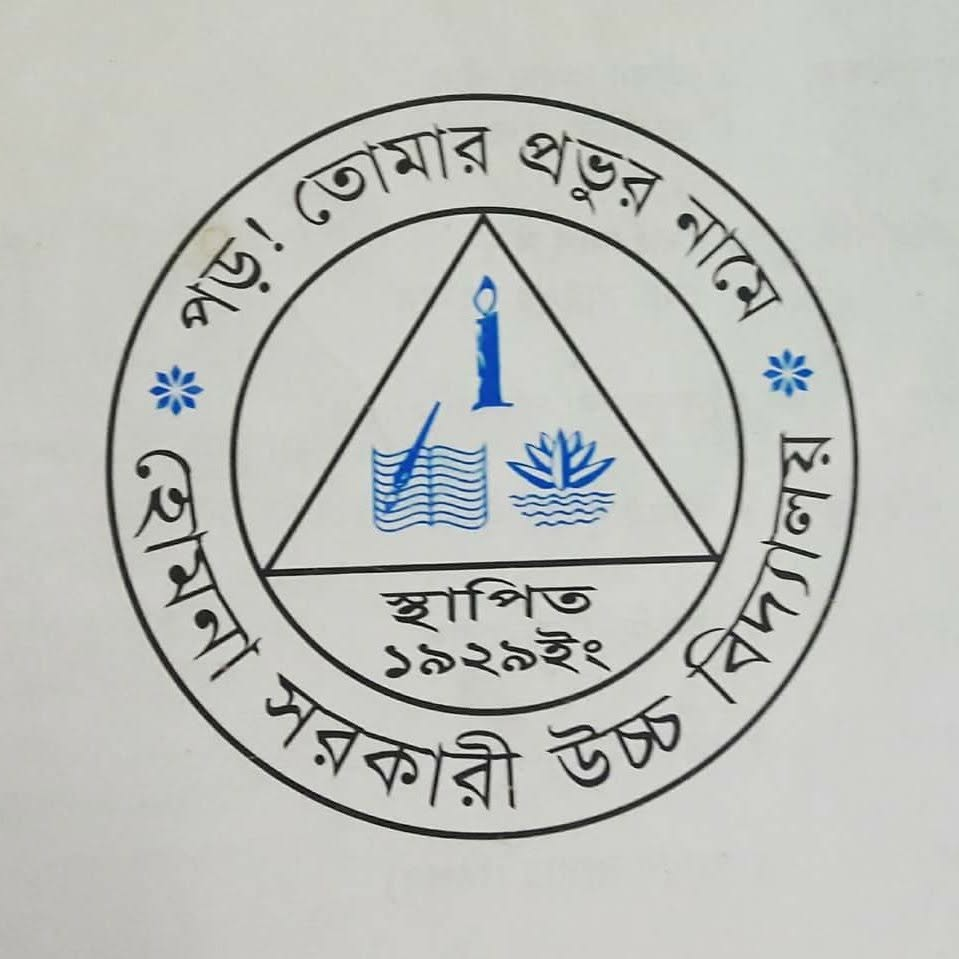

Current Thesis
Sign language recognition using a tactile data glove equipped with pressure sensors, IMU data, and OptiTrack motion tracking.
MSc Computer Science | The University of Aizu
Research-focused computer scientist working across multimodal AI, wearable sensing, networking, and cybersecurity.
I build and study intelligent sensing systems, including tactile data gloves for sign language recognition, and I am preparing for PhD applications with active interests in secure networked systems and AI-driven cybersecurity.
PhD-facing research identity across multimodal AI, wearable sensors, networking, and cybersecurity.
Sign language recognition using a tactile data glove equipped with pressure sensors, IMU data, and OptiTrack motion tracking.
I am preparing for PhD applications at the intersection of multimodal AI, wearable sensing, secure networked systems, and cybersecurity. My goal is to build intelligent systems that are accurate, deployable, and reliable in real-world sensing and communication environments.
Two cybersecurity-related papers are currently in progress, extending my profile beyond sensor AI into secure systems and network-focused research.
Recent peer-reviewed output from 2025.
An efficient deep learning model for static ASL gesture recognition in resource-constrained environments.
Enhanced nondestructive prediction of peach sugar content using hyperspectral imaging and convolutional neural networks.
Chest compression skill evaluation system using pose estimation and web-based application.
Academic background with institutional records and downloadable transcripts.
Research Assistant in Professor JING Lei's lab. Major in Computer Science and Engineering. CGPA: 3.90/4.00.
CGPA: 3.33/4.00. Undergraduate thesis: Phishing Attack Detecting System.
Science group, Dhaka Board. GPA: 5.00.

Homna Government High SchoolScience group, Cumilla Board. GPA: 5.00.
Research, teaching, and internship experience relevant to PhD applications.
Engaged in research activities at the Faculty of Computer Science and Engineering and developed practical knowledge in advanced computer science methodologies.
Selected projects across research prototypes, cybersecurity, and software systems.
Master thesis work comparing deep learning accuracy using hysteresis-derived sensor features versus raw sensor data for dynamic sign language recognition.
Designed a data glove, tested it using IMADA, calibrated sensors, and prepared real-time raw sensor data collection workflows.
Undergraduate thesis prototype focused on phishing attack detection for safer browsing and future secure-system development.
Built Superstore, Study Assist, Bookshop, and Restaurant Management projects using database, OOP, and reporting concepts.
Data-glove system for dynamic sign language recognition using pressure sensors, IMU signals, and deep learning. Full implementation and source code available on GitHub.
Technical capabilities organized by research and engineering area.
Available for PhD admissions conversations, research collaboration, and technical opportunities.
Dr. Jing Lei, The University of Aizu | leijing@u-aizu.ac.jp
Dr. Dip Nandi, AIUB | dip.nandi@aiub.edu
Abhijit Bhowmik, AIUB | abhijit@aiub.edu
Dr. M. M. Manjurul Islam, Ulster University | m.islam@ulster.ac.uk